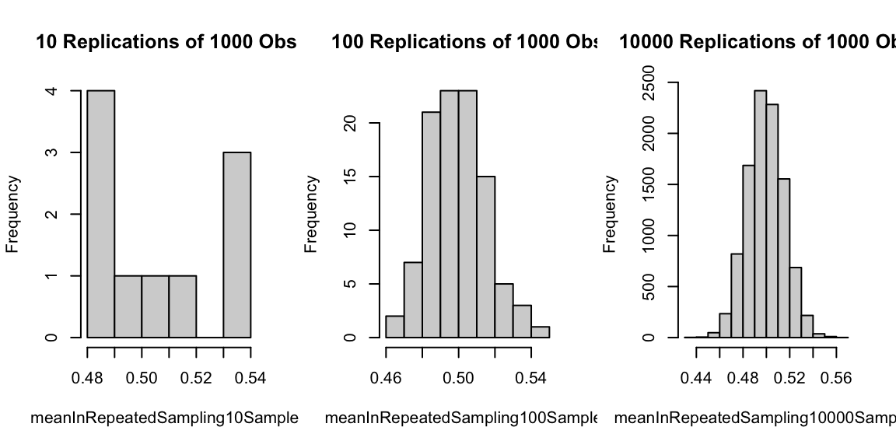
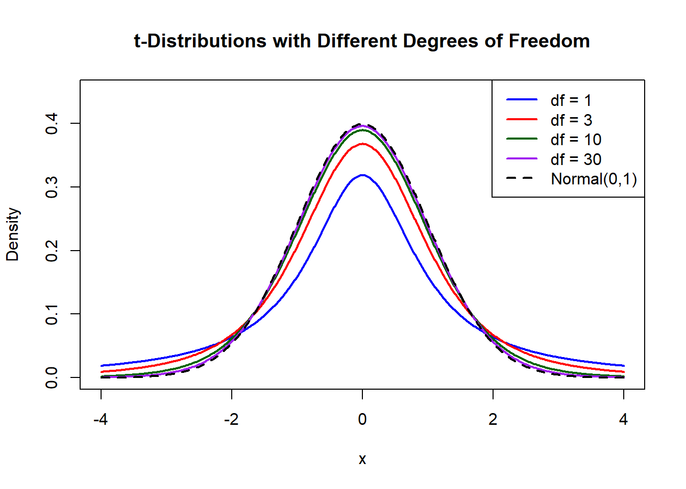

We want to investigate the Bernoulli random variable \(X\)~ Bernoulli(\(p\)), where \(p=1/2.\) It is easy to know \(E(X) = p = 1/2\).
Let’s generate samples with fixed the sample size \(n =1000\). We generate the sample with 10 times, 100 times, and 10000 times.
n <-1000x <-c(0,1) meanInRepeatedSampling10Samples<-replicate(10, mean(sample(x, size=n, replace=TRUE)))meanInRepeatedSampling100Samples<-replicate(100, mean(sample(x, size=n, replace=TRUE)))meanInRepeatedSampling10000Samples<-replicate(10000, mean(sample(x, size=n, replace=TRUE)))par(mfrow=c(1,3))hist(meanInRepeatedSampling10Samples,main =paste("10 Replications of 1000 Obs "))hist(meanInRepeatedSampling100Samples,main =paste("100 Replications of 1000 Obs"))hist(meanInRepeatedSampling10000Samples,main =paste("10000 Replications of 1000 Obs"))

As we will see, the sampling distribution of \(X\) is approximately normal with mean equal to the expected value of \(X\),\(E(X) = 1/2\). In other words, the example above illustrates a known result–the Central Limit Theorem, one of the cornerstone results used in inference!
Central Limit Theorem (CLT)
Let \(\bar{X}\) be the mean of a random sample of size \(n\) taken from a population with mean \(\mu\) and finite variance \(\sigma^2\), then the limiting form of the distribution of \[ Z = \frac{\bar{X} -\mu}{\sigma/\sqrt{n}},\] as \(n\rightarrow \infty\), is the standard normal distribution, i.e., \(Z \sim \mathcal{N}(0,1)\).
Remark
When sample size \(n\) is large (\(n>30\)), approximately, \[\bar{X}\sim \mathcal{N}(\mu, \sigma^2/n)\]
The mean and standard deviation of sample mean from a population with mean \(\mu\) and standard deviation \(\sigma\) are always: \[\mu_{\bar{X}} = \mu, \qquad \sigma_{\bar{X}} = \frac{\sigma}{\sqrt{n}},\]regardless of population distribution and sample size \(n\).
Example 1. When a batch of a certain chemical product is prepared, the amount of a particular impurity in the batch is a random variable with mean value 4.0 g and standard deviation 1.5 g. If 50 batches are independently prepared, what is the (approximate) probability that the sample average amount of impurity \(\bar{X}\) is between 3.5 and 3.8 g?
Answer: Since the sample size \(n = 50 >30\), we can assume the distribution of sample mean \(\bar{X}\) is approximately normal with mean and standard deviation \[\mu_{\bar{X}} = \mu = 4.0,\qquad \sigma_{\bar{X}} = \frac{\sigma}{\sqrt{n}} = \frac{1.5}{\sqrt{50}} = 0.2121.\] Thus, \[P(3.5\leq \bar{X}\leq 3.8) = P\left(\frac{3.5-4}{0.2121}\leq Z\leq \frac{3.8-4}{0.2121}\right)
= P(-2.36\leq Z\leq -0.94)
= 0.1645\]
How to solve it in R? We can use pnorm().
nsize<-50# Sample Sizea <-3.5b <-3.8std <-1.5mu <-4# Mean of Sample MeanstandardDev <- std/sqrt(nsize) # Sd of Sample Meanp1<-pnorm(b, mean = mu, sd = standardDev) -pnorm(a,mean = mu,sd = standardDev)p1
Question: What happened when \(n\) becomes larger?
Suppose \(n = 200\)
nsize<-200# New Sample SizestandardDev <- std/sqrt(nsize) # Sd of Sample Meanp1<-pnorm(b, mean = mu, sd = standardDev) -pnorm(a,mean = mu,sd = standardDev)p1
[1] 0.02967201
Conclusion: When sample size increases, sample mean has a larger probability to close to population mean.
In-class Exercise: Sample Mean Distribution
A maker of a certain brand of low-fat cereal bars claims that the average saturated fat content is 0.5 gram and standard deviation is 0.1. In a random sample of 35 cereal bars of this brand, the sample mean is 0.6.
What is the probability to get the sample mean larger than or equal to 0.6?
What is the probability to get the sample mean less than or equal to 0.45?
Sampling Distribution of the Difference between Two Means
A scientist or engineer may be interested in a comparative experiment in which two manufacturing methods, 1 and 2, are to be compared. The basis for the comparison is the difference in the population means. Suppose that we have two populations, the first with mean \(\mu_1\) and variance \(\sigma_1^2\), and the second with mean \(\mu_2\) and variance \(\sigma_2^2\).
Theorem If independent samples of size \(n_1\) and \(n_2\) are drawn at random from two populations, discrete or continuous， with means \(\mu_1\) and \(\mu_2\) and variances \(\sigma_1^2\) and \(\sigma_2^2\), respectively, then the sampling distribution of the differences of means, \(\bar{X}_1-\bar{X}_2\), is approximately normally distributed with mean and variance given by \[\mu_{\bar{X}_1-\bar{X}_2} = \mu_1-\mu_2, \qquad \sigma_{\bar{X}_1-\bar{X}_2}^2 = \frac{\sigma^2_1}{n_1} + \frac{\sigma_2^2}{n_2}.\] Hence, \[Z = \frac{\left(\bar{X}_1-\bar{X}_2\right)-(\mu_1-\mu_2)}{\sqrt{\sigma^2_1/n_1 + \sigma_2^2/n_2}} \sim \mathcal{N}(0,1).\]
Remark: If both \(n_1\) and \(n_2\) are greater than or equal to 30, the normal approximation for the distribution of \(\bar{X}_1-\bar{X}_2\) is very good when the distributions are not too far away from normal.
Example 2. The television picture tubes of manufacturer \(A\) have a mean lifetime of 6.5 years and a standard deviation of 0.9 year, while those of manufacturer \(B\) have a mean lifetime of 6.0 years and a standard deviation of 0.8 year. What is the probability that a random sample of 36 tubes from manufacturer \(A\) will have a mean lifetime that is at least 1 year more than the mean lifetime of a sample of 49 tubes from manufacturer \(B\)?
Answer: We are given the following information: \[\begin{align*}
\text{Poppulation 1:} & \mu_1 = 6.5, \qquad \sigma_1 = 0.9, \qquad n_1 = 36, \\
\text{Poppulation 2:} & \mu_2 = 6.0, \qquad \sigma_2 = 0.8, \qquad n_2 = 49 .\\
\end{align*}\] Thus the distribution of \(\bar{X}_1 - \bar{X}_2\) will be approximately normal and with mean and standard deviation \[ \mu_{\bar{X}_1 - \bar{X}_2} = 6.5-6.0 = 0.5, \qquad
\sigma_{\bar{X}_1 - \bar{X}_2} = \sqrt{\frac{0.81}{36}+\frac{0.64}{49}} = 0.189.\] Thus by the theorem \[ P(\bar{X}_1 - \bar{X}_2 \ge 1.0) = P(Z > \frac{1.0-0.5}{0.189}) = P(Z>2.65)
= 1- P(Z \le 2.65) = 0.0040.\]
How to solve it in R?
# We can solve it in two ways# Method I:n1<-36# Sample Size of population 1n2<-49# Sample size of population 2mu1<-6.5# Mean of population 1mu2<-6.0# Mean of population 2sigma1<-0.9# Std of population 1sigma2<-0.8# Std of population 2value <-1.0p1<-1-pnorm(value, mean = mu1-mu2, sd =sqrt(sigma1^2/n1 + sigma2^2/n2))p1
Question: Suppose the sample mean from manufacture A is \(\bar{x}_A=6.2\), and the sample mean from manufacture B is \(\bar{x}_B = 6.1\). What conclusion can we make?
xbarA <-6.2xbarB <-6.1p1<-pnorm(xbarA-xbarB, mean = mu1-mu2, sd =sqrt(sigma1^2/n1 + sigma2^2/n2))p1
[1] 0.01695454
Conclusion: If \(\mu_A = 6.5\) and \(\mu_B = 6.0\), the probability to get a difference between sample means \(\bar{X}_A -\bar{X}_B \le 0.1\) is around 0.017, very unlikely.
In-class Exercise: Difference between Two Means
Two different box-filling machines are used to fill cereal boxes on an assembly line. The critical measurement influenced by these machines is the weight of the product in the boxes. Engineers are quite certain that the variance of the weight of product is \(\sigma^2 = 1\) ounce. Experiments are conducted using both machines with sample sizes of 36 each. The sample averages for machines \(A\) and \(B\) are \(\bar{x}_A = 4.5\) ounces and \(\bar{x}_B = 4.7\) ounces. Engineers are surprised that the two sample averages for the filling machines are so different.
Use the Central Limit Theorem to determine \[P(\bar{X}_B-\bar{X}_A \ge 0.2)\] under the condition that \(\mu_A = \mu_B\).
Do the aforementioned experiments seem to, in any way, strongly support a conjecture that the population means for the two machines are different? Explain using your answer in a.
Question: If we have no idea about the population variance, what can we do?
Answer: We need \(t\) distribution
The \(t\) Distribution
Let \(X_1, X_2,...,X_n\) is a random sample from a distribution \(\mathcal{N}(\mu, \sigma^2)\) and \[ \bar{X} = \frac{1}{n}\sum_{i=1}^n X_i, \qquad S^2 = \frac{1}{n-1}\sum_{i=1}^n (X_i-\bar{X})^2.\] Then the random variable \[T = \frac{\bar{X}-\mu}{S/\sqrt{n}}\] has the \(t\) distribution with \(v = n-1\) degrees of freedom, denoted as \(t_{n-1}\).
Remark: The \(t\)-distribution can still be used even if the population distribution is not normal, as long as
the sample size \(n\) is large.
the population distribution is not too-skewed.
Different \(t\) Distributions
The following is the graph of the pdf of \(t\) distribution with different degrees of freedom. As the degrees of freedom \(v\) gets large, the pdf gets closer to normal curve.

Example 3. A chemical engineer claims that the population mean yield of a certain batch process is 500 grams per milliliter of raw material. To check this claim he samples 25 batches each month. If the computed \(t-\)value falls between \(-t_{0.05}\) and \(t_{0.05},\) he is satisfied with this claim. What conclusion should he draw from a sample that has a mean \(\bar{x} = 518\) grams per milliliter and a sample standard deviation \(s = 40\) grams? Assume the distribution of yields to be approximately normal.
Answer: We know \(\mu = 500, \bar{x}=518, s = 40, n = 25\). Thus \(v = n-1=24\). Then \[ t = \frac{518-500}{40/\sqrt{25}} = 2.25.\]
How to find \(\pm t_{0.05}\)? We should consider the quantile function qt.
# To get t_{0.05} with v = 24alpha <-0.05v <-24tvalue <-qt(1- alpha, v)tvalue
[1] 1.710882
# Or we can get -t_{0.05} with v = 24 firsttnegvalue <-qt(alpha, v)tnegvalue
[1] -1.710882
p <-pt(tvalue,df = v)-pt(tnegvalue,df = v)p
[1] 0.9
Therefore, based on the value of \(t\) computed from the sample, it is more reasonable \(\mu >500\). Hence, the engineer is likely to conclude that the process produces a better product than he thought.
In-class Exercise: \(t\) Distribution
A manufacturing firm claims that the batteries used in their electronic games will last an average of 30 hours. To maintain this average, 16 batteries are tested each month. If the computed t-value falls between \(-t_{0.025}\) and \(t_{0.025}\), the firm is satisfied with its claim. What conclusion should the firm draw from a sample that has a mean of \(\bar{x}= 27.5\) hours and a standard deviation of \(s = 5\) hours? Assume the distribution of battery lives to be approximately normal.
Conclusion
If \(\sigma\) is known, when sample size \(n>30\), we have \[Z = \frac{\bar{X}-\mu}{\sigma/\sqrt{n}} \sim \mathcal{N}(0,1).\]
If \(\sigma\) is unknown, the population follows approximately normal distribution, we have \[T = \frac{\bar{X}-\mu}{s/\sqrt{n}}\] follows the t distribution with \(v=n−1\) degrees of freedom.